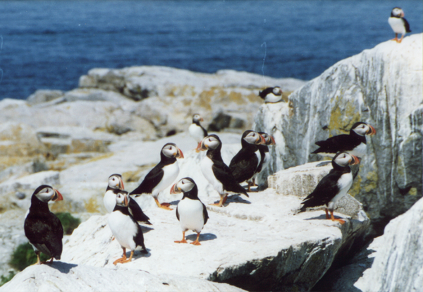
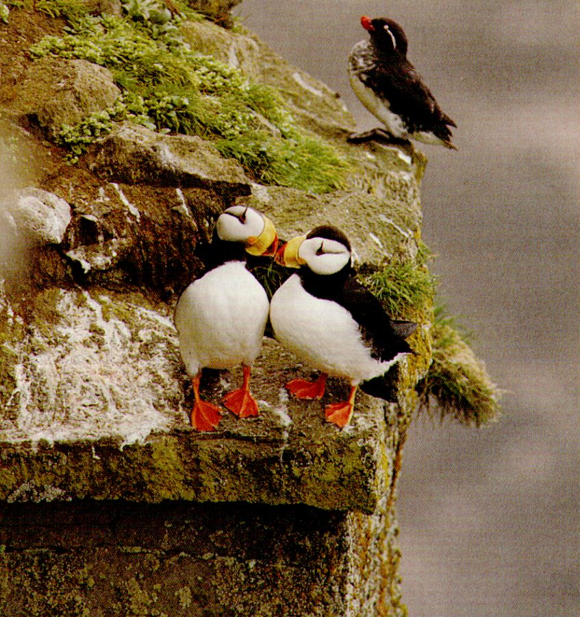
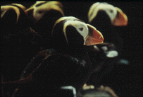

PUFFINS

The puffin, Fratercula arctica, is possible the most famous and most instantly appealing bird on the island- certainly it is the species that most people come to see. It is a member of the auk family (Alcidae). Auks live only in the northern hemispere, and the family contains 21 other species including, on Skomer, the razorbill and the guillemot, making three of the only six that live in the north Atlantic.The puffin that we are familiar with in Wales is the common, or Atlantic, puffin. Other species, however, are commonly found in America, including the horned puffin and the tufted puffin.
Puffins are really designed for life at sea, where they spend the entire winter. However, they are better equipped for life on land than the manx shearwaters, so whilst thay are heavily parasitised for their food by the gulls during the breeding season, and may indeed be killed by a great black-backed gull, their food-collecting trips for their young are shorter that are those of shearwaters, and they come into land by day.


When standing on land the average puffin is around 200 mm tall. During the breeding season it has the deep, ridged, brightly coloured beak as seen above, which it achieves fully by 4/5 years of age when it becomes a fully mature adult. However, during the winter, the colour is lost, the face becomes darker and the red eye ornaments are shed.
Puffins winter at sea (for the Skomer puffins around the Bay of Biscay) for around seven months. By about early April they begin to return to Skomer, first gathering in small rafts and eventually tentatively coming in to land on the grassy slopes at the tops of the cliffs, where they nest in burrows. Like the shearwaters, puffins benefit from the total lack of ground predators on Skomer, unlike on the neighbouring island of Ramsey where rats are a problem. Puffins generally mate with the same bird year after year, and reunited pairs return to the same colonies to mate and reclaim their burrows each spring. They may gather nest material, and lay a single egg around April-May time- the chicks then hatch from mid-May onwards. Both parents will feed the chick, mainly on sand eels, until it fledges at around 40 days of age.